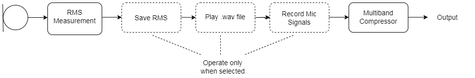
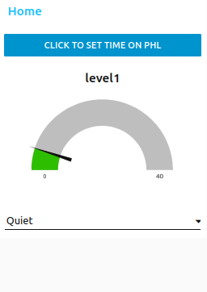
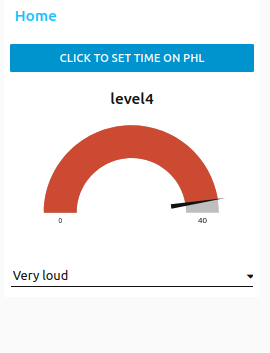
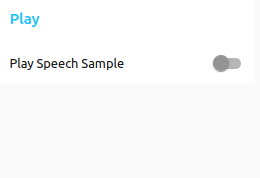
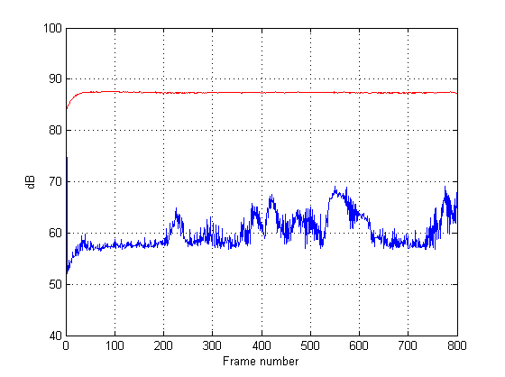

The PHL has the capability to serve as an Ecological Momentary Assesment system that can capture real-time data from subjects as they go about their daily lives. The very basic system described here shows a few simple techniques that can serve as a starting point for development of an EMA for specific research areas. This example also shows how to play .wav files stored on the PHL, a function that might not normally be associated with EMA systems but could useful nevertheless.
The Node Red user interface is used in this example as it is the standard GUI used on the PHL. Other frameworks could be used, like Python, and the general methods shown here could be adapted.
The files for this project are located at:
https://github.com/BC-support/EMA
Setting the correct date and time
EMA systems typically save a lot of data at various times throughout the day so it’s usually important for the EMA to associate any saved data with a timestamp. The current PHL doesn’t have a real time clock, so the time needs to be set whenever the device is powered up. If this isn’t done there will be a time and date available, but it will be incorrect.
The example system described here provides a way to set the correct time and date through the Node Red GUI interface. The time is read from the system running the GUI (smartphone, computer, etc.) and sent to the PHL.
Main system components
EMA.cfg
The signal processing here is a very bare bones multiband compressor with omni mics. The same techniques could be applied to more complex algorithms.

RMS Measurement: From ‘rmslevel’ plugin.
Save RMS: Uses ‘acrec’ plugin.
Play .wav file: Replaces mic signal with .wav file source using ‘wavplay’ plugin.
Record Mic Signals: Saves mic signals to .wav file using ‘wavrec’ plugin.
Multiband Compressor: Simple 5 band compressor that processes mic signals or .wav file sources.
Node Red interface
The GUI in this example is centered around a simple dropdown menu that allows the user to rate the noise level of their current environment. The Node Red controls are configured to save several seconds of the RMS level when a noise level is chosen. This is done by setting the ‘record’ variable of the acrec plugin to ‘yes’ for a short interval. As the plugin documentation describes, a new data file is created and saved for each cycle of the ‘record’ variable going from yes to no.


The noise level ratings are saved to a single text file with a time stamp that matches the RMS data file time. Each noise level rating is stored on a separate line in the file. This is accomplished with the ‘file’ node and is easy to modify to store whatever data or information is required.
The Play tab has a slider button that plays .wav files stored on the PHL. This is a very simple framework that cycles through the files. The .wav data replaces the mic signals and is processed by the compressor. This example switches back to the mic signal and resets the slider after 3 seconds, so the stored speech samples are limited to this duration.

The Record tab has two slider switches that illustrate how the RMS and mic signals can be saved. Since this example saves the RMS levels automatically when the noise level rating is set, these controls aren’t strictly necessary. The sliders are reset after an arbitrary time interval.
The Home tab button to set the time on the PHL uses the ‘this.scope.action’ commands to get the time from the smartphone or PC, instead of the PHL, which is important.
Data handling
The recorded RMS data is stored in .dat files on the PHL. These files can be downloaded to a host PC and analyzed. A simple Python program is included here that shows how to read the binary data, stored as a double data type, and convert it to text format. The plot here shows an example of saved microphone levels with a tone source next to the right microphone.

The noise levels are stored in the previously described text file.
1
2
3
4
level2 at Fri Apr 14 2023 14:48:56 GMT+0000 (Coordinated Universal Time)
level4 at Fri Apr 14 2023 14:49:00 GMT+0000 (Coordinated Universal Time)
level1 at Fri Apr 14 2023 14:49:03 GMT+0000 (Coordinated Universal Time)
level3 at Fri Apr 14 2023 14:49:07 GMT+0000 (Coordinated Universal Time)
Going forward
The simple example system here shows general methods of how the PHL can be used to investigate a subject’s experience with different soundscapes. Compared to a smartphone based EMA with regular hearing aids, the PHL has to ability to record more of the true acoustic data present in an environment. Many preference assessments could be moved from simulated lab settings to real-world cafeterias, homes, cars, etc. Hearing researchers will be able to imagine many variations of the example system laid out here.